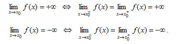
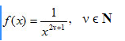

Στο σχήμα έχουμε τη γραφική παράσταση μιας συνάρτησης f κοντά στο x0. Παρατηρούμε ότι, καθώς το x κινούμενο με οποιονδήποτε τρόπο πάνω στον άξονα xʹx πλησιάζει τον πραγματικό αριθμό x0, οι τιμές f(x) αυξάνονται απεριόριστα και γίνονται μεγαλύτερες από οποιονδήποτε θετικό αριθμό Μ. Στην περίπτωση αυτή λέμε ότι η συνάρτηση f έχει στο x0 όριο +∞ και γράφουμε
Στο σχήμα έχουμε τη γραφική παράσταση μιας συνάρτησης f κοντά στο x0. Παρατηρούμε ότι, καθώς το x κινούμενο με οποιονδήποτε τρόπο πάνω στον άξονα xʹx πλησιάζει τον πραγματικό αριθμό x0, οι τιμές f(x) ελαττώνονται απεριόριστα και γίνονται μικρότερες από οποιονδήποτε αρνητικό αριθμό −M (M >0). Στην περίπτωση αυτή λέμε ότι η συνάρτηση f έχει στο x0 όριο −∞ και γράφουμε
Όπως στην περίπτωση των πεπερασμένων ορίων έτσι και για τα άπειρα όρια συναρτήσεων, που ορίζονται σε ένα σύνολο της μορφής (α, x0)∪(x0, β), ισχύουν οι παρακάτω ισοδυναμίες:
Με τη βοήθεια του ορισμού αποδεικνύονται οι παρακάτω ιδιότητες :
Επομένως, δεν υπάρχει στο μηδέν το όριο της
